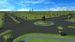
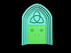

Prototypes
Currently at the prototype stage of production, Flasher is a top-down sandbox game, similar to the original Grand Theft Auto. The aim of the game is to flash yourself to as many people as possible without getting caught by police and security. The game will put the player in several fun situations where flashing is both inappropriate, and necessary!
Cannonize is a turn-based strategygame where players place cogs to acquire cannons, when they can then turn with said cogs to attack opponents.
This project was begun with the guidance of some student doctors in need of skin cancer recognition training. The player must identify skin cancers on a patients skin, then choose a treatment option. The player then begins a short shooter level as Captain Chemo', with the players treatment option determining how hard the cancer cells are to kill.
Click on images to open full size view
Since July 2011, I have been working at Roam Interactive in a variety of positions incliding 3D Artist, interactive designer and project lead. I have worked on a wide variety of projects ranging from individual buildings through to full cityscapes. The following images are just some examples of what I have worked on, with plenty more available upon request.



Avalon: the Fallen - Anger Issues Interactive
Avalon: the Fallen is a puzzle/adventure game set in a mythological, celtic world. While most assets were created by the art team, some minor objects were delegated to me due to my experience with 3d Studio Max. The following objects were implemented within the game.

Mourning with the Bones - 48 Hour Game Making Competition 2010
Once again teaming up with the team at Anger Issues Interactive, we joined the competition with high hopes. The game required a number of egyptian style objects to fill the map and make it feel more full, so I modelled and textured several inanimate objects that were used in the game. These can be viewed by clicking below.
Sheep Herder - 48 Hour Game Making Competition 2009
In the 2009 48 Hour Game Making Competition, I held the position of game and audio designer, but also animator. As such, I was given the resposibility of creating the main character. This shepherd character was conceptualized, modelled, textured, skinned and animated within 18 hours. See the model's walk cycle here or see all of its animations by clicking here.